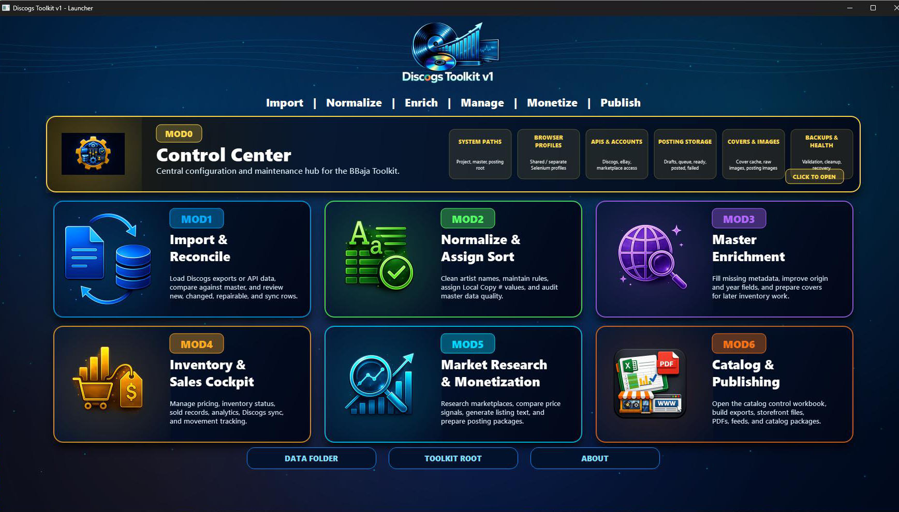
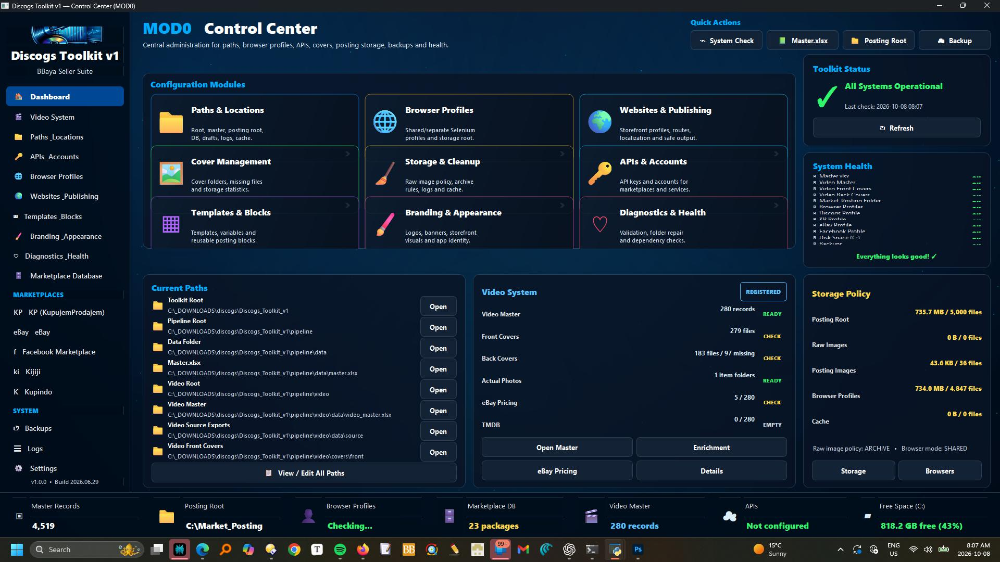
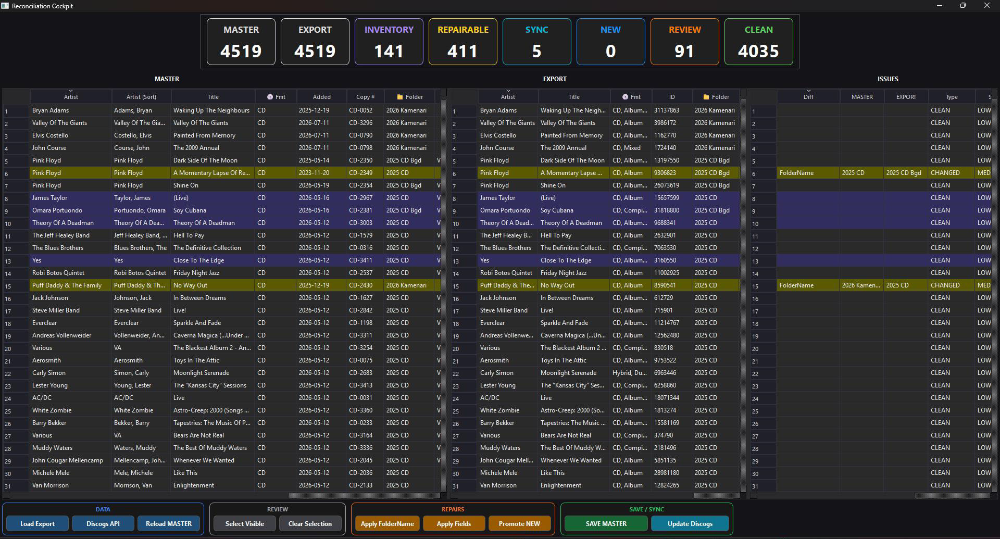
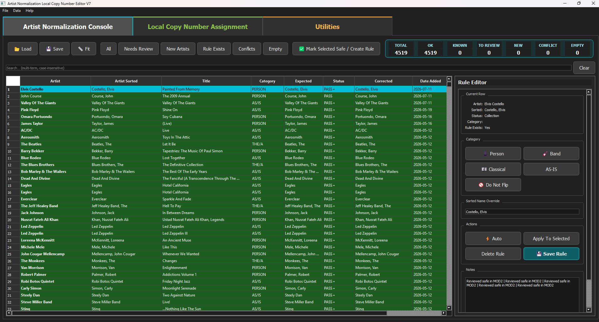
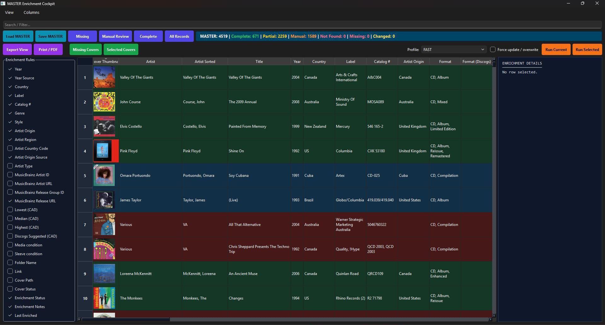
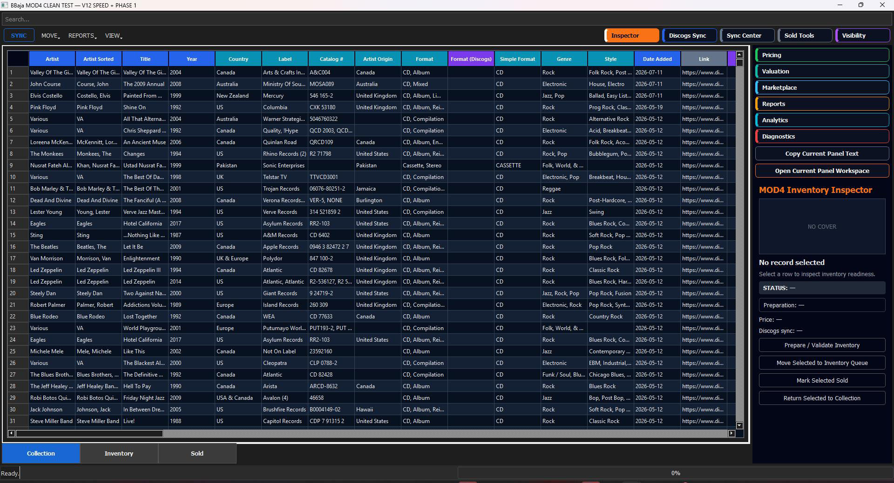
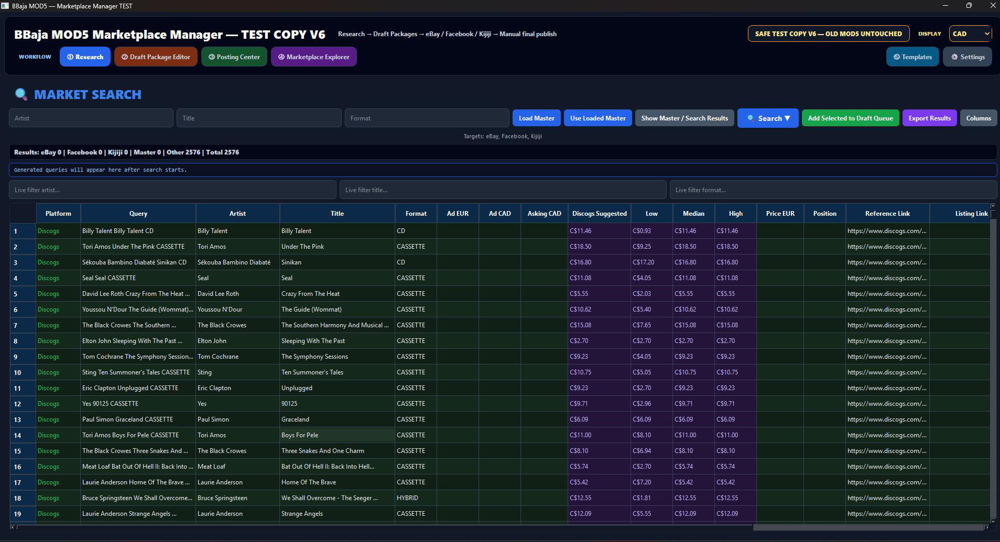
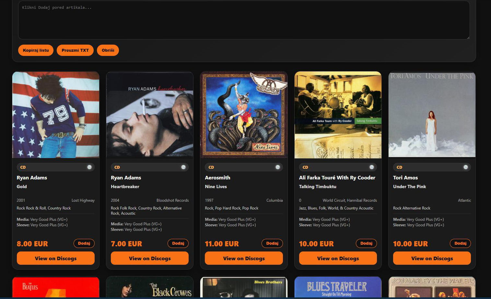

Seven modules. One shared Excel master.
One connected
Toolkit.
The launcher gives you one interface to open and run MOD0–MOD6 independently. Choose the module you need for the task at hand—from configuration and importing to assisted posting and publishing.
All modules store their data in the shared Excel master. Your collection, enriched details, stock and selling workflow stay connected as you move between modules.


Control Center
Configure APIs, accounts, paths, locations, browser profiles, templates, branding, diagnostics and every shared setting across the suite.
Explore MOD0 →
Import & Reconcile
Import a downloaded Discogs CSV or connect directly through the Discogs API, compare it with the master collection and safely apply selected changes.
Explore MOD1 →
Normalize, Sort & Assign Codes
Apply reusable artist sorting rules, resolve exceptions, and assign local copy numbers, SKU references and storage codes.
Explore MOD2 →
Master Enrichment
Enrich the master with Discogs and MusicBrainz metadata, artist-origin information, pricing references and cover images.
Explore MOD3 →
Inventory & Sales
Promote records from Collection to Inventory, manage Discogs listings, track sold items and use flexible master views.
Explore MOD4 →
Market Research & Assisted Posting
Research prices and prepare ready-to-post drafts. Reuse listings across platforms with your own templates, HTML where supported and emoji. Create graphical assets in IconLab.
Explore MOD5 →
Publishing Studio
Create stunning websites, storefronts, catalogs, lists, Excel, PDF, JSON and complete publishing packages.
Explore MOD6 →